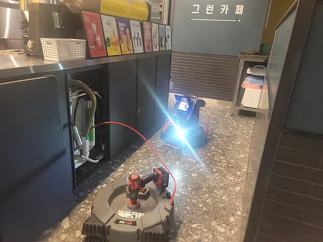
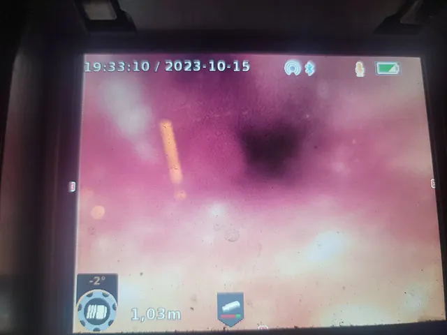
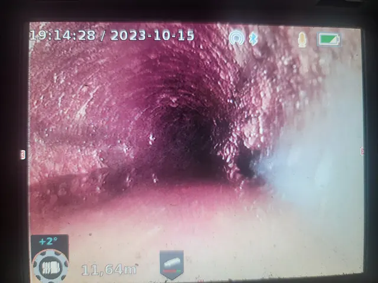

목포 하수구 시공사례가 통합되었습니다
중복된 주소를 정리하고 대표 시공사례 한 곳에서 최신 내용을 제공하고 있습니다.
대표 사례 페이지로 이동하수구·배관 현장 이미지
실제 현장에서 촬영한 작업 사진을 확인할 수 있습니다.
목포 하수구 시공사례 이전 안내 | 슈퍼맨하수구누수 하수구·배관 점검 및 시공 과정

목포 하수구 시공사례 이전 안내 | 슈퍼맨하수구누수 하수구·배관 점검 및 시공 과정

목포 하수구 시공사례 이전 안내 | 슈퍼맨하수구누수 하수구·배관 점검 및 시공 과정

목포 하수구 시공사례 이전 안내 | 슈퍼맨하수구누수 하수구·배관 점검 및 시공 과정
지역별 주요 배관 증상 안내
싱크대 막힘
배수가 느려지거나 역류가 반복된다면 배관 내부의 기름 슬러지, 이물질, 석회 등을 배관내시경으로 확인한 뒤 상황에 맞는 장비로 작업합니다.
변기 막힘
변기 막힘은 휴지, 물티슈, 석회, 공용배관 문제 등 원인을 먼저 확인한 뒤 적합한 장비로 안전하게 작업을 진행합니다.
배수구 막힘
바닥 배수구에 물이 오래 고이거나 악취와 기포가 반복되면 트랩 주변뿐 아니라 연결 배관 내부의 머리카락·비누 찌꺼기·슬러지 상태를 함께 확인해야 합니다. 배관내시경으로 막힘 구간을 점검한 뒤 증상에 맞춰 석션이나 배관청소를 진행하고 최종 배수 상태를 확인합니다.
맨홀 역류
맨홀에서 오수가 넘치거나 여러 배수구가 동시에 역류하면 세대 내부보다 건물 메인 오수관이나 외부 연결 배관의 정체 가능성을 먼저 살펴야 합니다. 관로와 맨홀 수위를 확인한 뒤 막힘 범위에 따라 석션 또는 고압세척을 진행하고 최종 통수 상태를 점검합니다.
오수관 막힘
오수관 막힘은 물티슈·기름 슬러지·침전물이 관로 안쪽에 누적되면서 화장실과 바닥 배수구의 동시 역류로 이어질 수 있습니다. 배관내시경으로 원인과 막힘 범위를 확인한 뒤 플렉스샤프트 또는 고압세척을 적용하고 작업 후 배관 내부와 배수 상태를 최종 검수합니다.